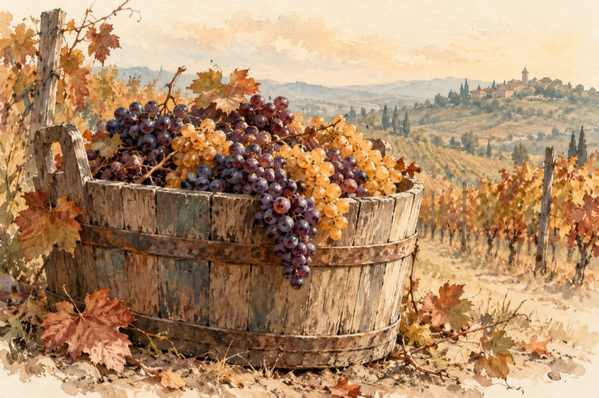

Da
Zăpușeală coane Gică
Nici la umbră nu am pace
Vara asta a fost cam mică
Mi-a plăcut și mi-ar mai place!
Dar frunzele s-au cam rărit
Vânturile ne dau iama
Viile s-au veștejit
A venit acasă toamna!
Mere, prune, roșcovane
Peste tot au apărut
Să le guști dau să te-ndemne
Strugurii au căpătat gust
Roadele toate din câmp
Ne cheamă să le culegem
Totul se-ncadrează-n timp
Bucurii în casă-avem
Și tu și tu și tu știi
Ce frumoasă este toamna
Colo la cules de vii
Când se-adună în căzi poama
Și-ncepe mustul a fierbe
Pân’ se face tulburel
Și pastrama să te cheme
Gicule, nu mai poți sta cumințel!
Vasile Groza